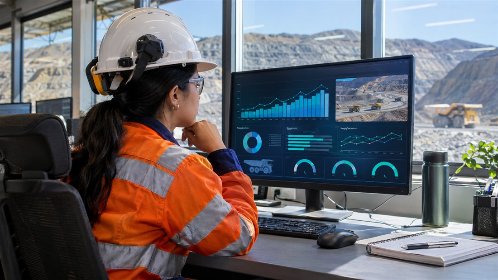
Minería
Producción y ciclos de operación minera
Compara producción y plan, tiempos de ciclo y utilización de flota para orientar la revisión de desvíos operativos.
Explorar caso →Explora el alcance de los 22 casos por sector. Las imágenes y cifras son simuladas para proteger la confidencialidad de los clientes.
22 casos · Imágenes y datos simulados

Compara producción y plan, tiempos de ciclo y utilización de flota para orientar la revisión de desvíos operativos.
Explorar caso →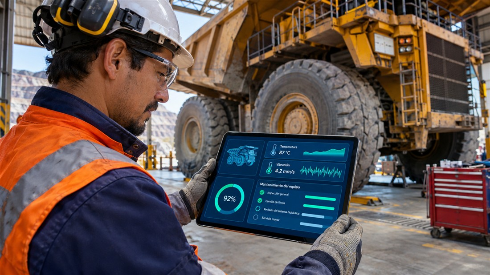
Reúne señales de equipos y registros de mantenimiento para explorar anomalías y priorizar revisiones técnicas.
Explorar caso →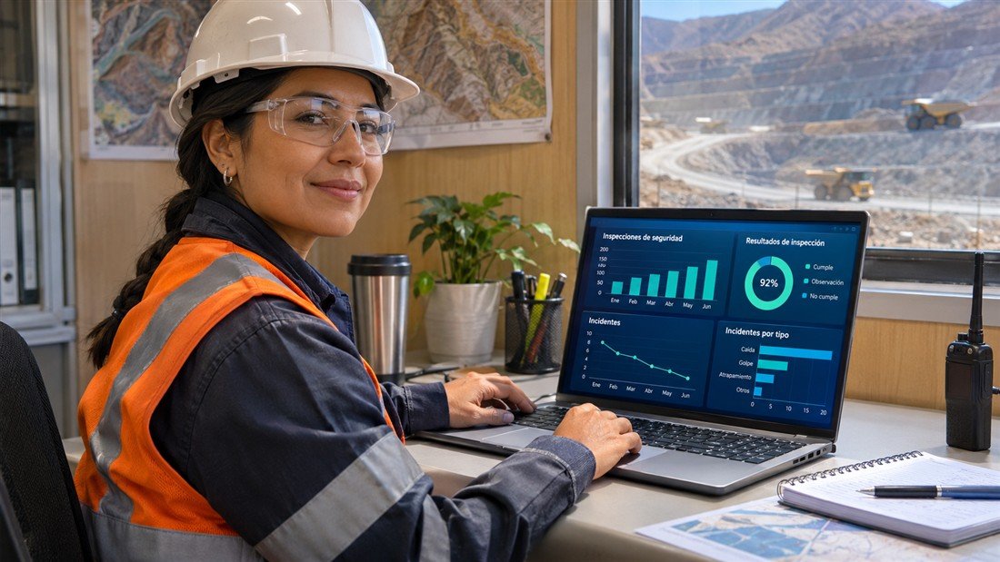
Organiza incidentes, controles e inspecciones por área y turno para dar seguimiento a acciones preventivas.
Explorar caso →Relaciona afluencia, tiempos de atención y capacidad para apoyar la planificación de turnos y dotaciones.
Explorar caso →
Presenta posiciones, flujos proyectados y necesidades de fondeo para apoyar la revisión de escenarios financieros.
Explorar caso →Organiza iniciativas, presupuesto, plazos y capacidades para orientar la priorización del portafolio digital.
Explorar caso →Analiza demanda, agendas y tiempos de atención remota para apoyar la coordinación del servicio.
Explorar caso →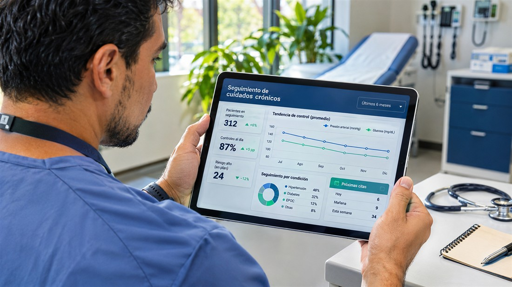
Presenta controles, adherencia y evolución de indicadores para apoyar el seguimiento del equipo asistencial.
Explorar caso →Integra esperas, ocupación y procesos de admisión y alta para identificar puntos de congestión.
Explorar caso →Relaciona progreso, asistencia y entregas para orientar el acompañamiento en cursos virtuales.
Explorar caso →Reúne evaluaciones, asistencia y entregas para identificar necesidades de apoyo y revisar intervenciones.
Explorar caso →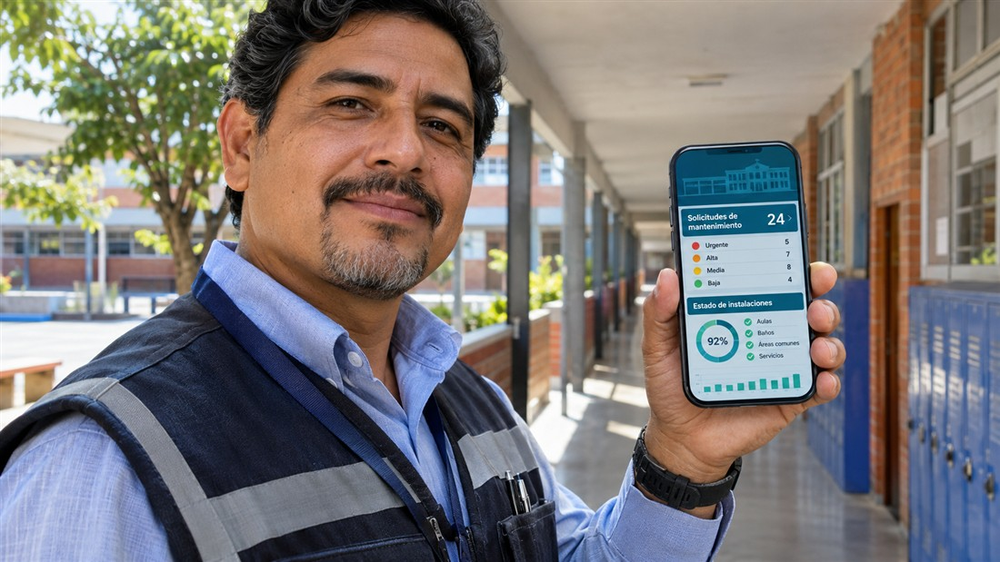
Consolida estado de instalaciones y solicitudes de mantenimiento para priorizar intervenciones y recursos.
Explorar caso →
Visualiza señales de sensores, consumos y eventos para revisar desviaciones en la operación industrial.
Explorar caso →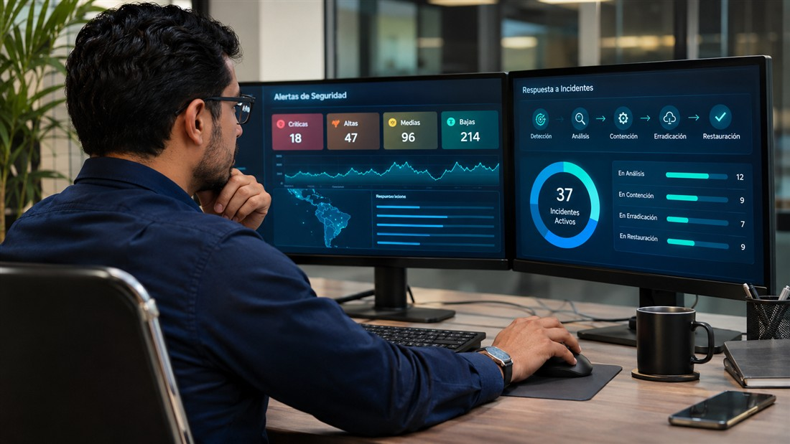
Consolida alertas, vulnerabilidades e incidentes para apoyar su priorización y seguimiento de respuesta.
Explorar caso →Relaciona tiempos de ciclo, defectos y despliegues para revisar cuellos de botella y calidad de las entregas.
Explorar caso →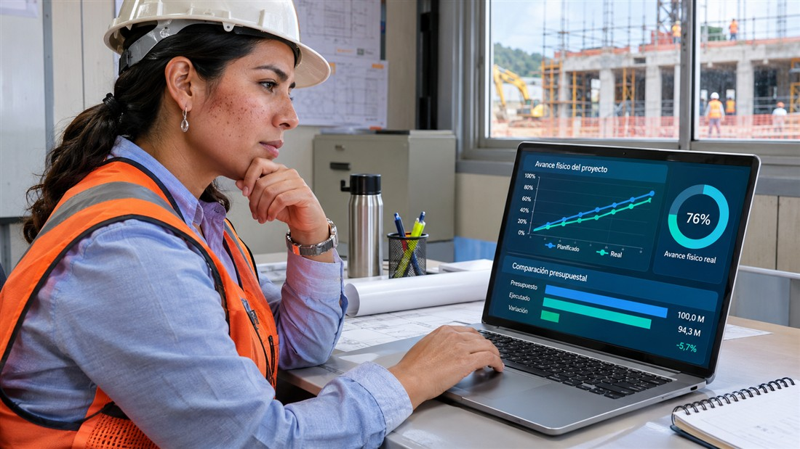
Compara avance físico y programación junto con hitos y presupuesto para revisar desviaciones de ejecución.
Explorar caso →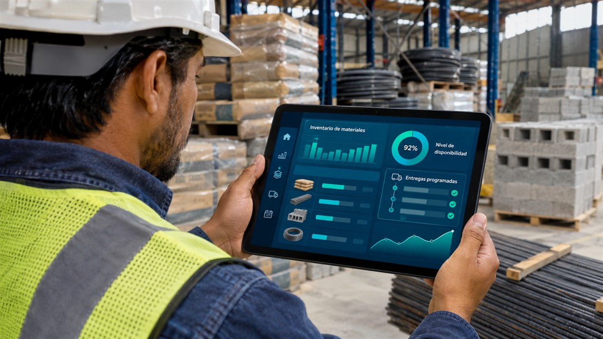
Relaciona existencias, consumos y entregas para coordinar el abastecimiento de los frentes de trabajo.
Explorar caso →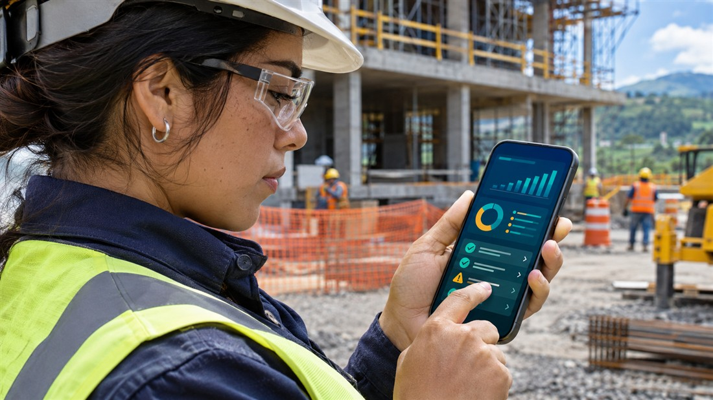
Reúne inspecciones, hallazgos y acciones correctivas para dar seguimiento a la prevención en campo.
Explorar caso →Presenta presupuesto, ejecución y avance de proyectos como apoyo a la consulta y rendición de cuentas.
Explorar caso →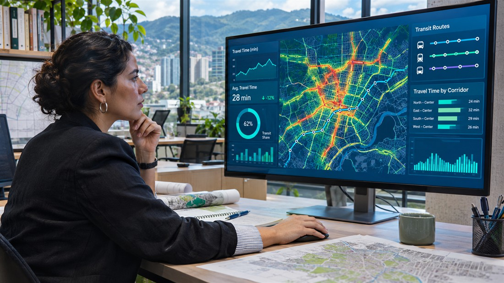
Reúne flujos, tiempos de viaje e incidentes para explorar necesidades de gestión de movilidad.
Explorar caso →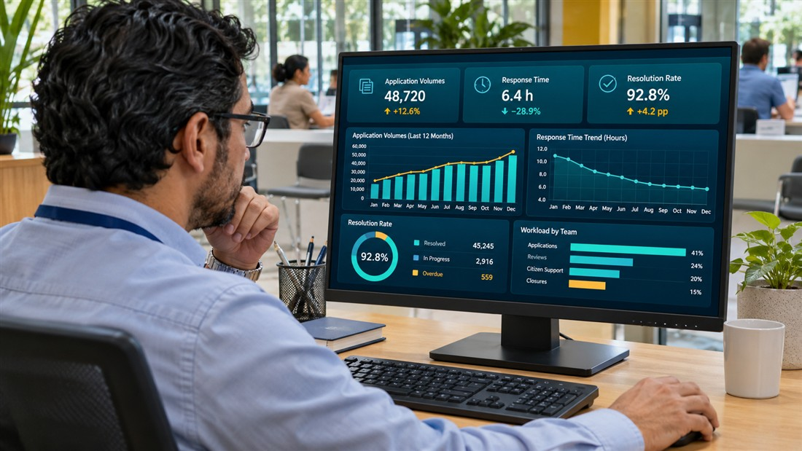
Analiza solicitudes, tiempos y carga por dependencia para revisar el desempeño de la atención ciudadana.
Explorar caso →
Integra ejecución presupuestaria, alertas, pronósticos y tendencias para anticipar desviaciones y apoyar la planificación de riesgos laborales en el sector seguros.
Explorar caso →